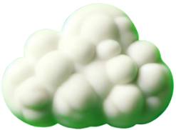

<!DOCTYPE html>
<html lang="en">

<head>
    <meta charset="UTF-8">
    <meta name="viewport" content="width=device-width, initial-scale=1.0">
    <title>clouds</title>
</head>
<style>
    body{
        background-color: #80a8ff;
    }
    .clds {
        position: fixed;
    }

    .clds img {
        height: 100px;
    }

    .centered {
        display: flex;
        justify-content: center;
        align-items: center;
        /* border: 1px solid black; */

        font-family: Arial, Helvetica, sans-serif;
        font-size: 20px;
        font-weight: 800;
        color: rgb(126, 124, 124);

    }
</style>

<body>
    <!-- <div class="clds">
        
    </div> -->

</body>
<script>

    alert("enable sound for better experience")

    function insert() {
        var elm = document.createElement('div')
        elm.className = 'clds centered'
        // elm.innerHTML = ``
        elm.innerHTML = ``;

        elm.style.marginTop = map(Math.random(), 0, 1, 0, window.innerHeight - 300) + 'px'
        elm.style.marginLeft = map(Math.random(), 0, 1, window.innerWidth-1300, window.innerWidth + 1000) + 'px'
        document.body.appendChild(elm)
    }

    insert();
    insert();
    insert();
    insert();
    insert();
    insert();
    insert();
    insert();
    insert();
    insert();
    insert();

    window.addEventListener('click', (e) => {
        var prt = e.target.parentElement;
        console.log(prt.tagName);

        // Check if the parent element is an IMG tag
        if (e.target.tagName === 'IMG') {
            // Preserve the original height and width of the parent element
            prt.style.height = prt.offsetHeight + 'px';
            prt.style.width = prt.offsetWidth + 'px';

            // Replace the inner content of the parent element
            prt.innerHTML = ``;

            let sound = new Audio(`sound/pop.mp3`);
            sound.play();

            // Initialize scale value
            let scaleValue = 1;

            // Set an interval to animate the scaling
            var a = setInterval(() => {
                scaleValue += 0.02;  // Increment scale gradually

                prt.style.transform = `scale(${scaleValue})`;  // Apply scaling using transform

                if (scaleValue > 2) {
                    clearInterval(a);  // Stop the animation once scale exceeds 2
                    prt.innerHTML = ''
                    prt.style.height = '1px'
                    prt.style.width = '1px'
                }
            }, 1);
        }
    });


    setInterval(() => {
        const allClds = document.getElementsByClassName("clds");
        Array.from(allClds).forEach((elm) => {
            let currentMargin = parseInt(elm.style.marginLeft, 10) || 0;
            // console.log(currentMargin);

            if (currentMargin <= -200) {
                elm.remove();
                insert()
            } else {
                elm.style.marginLeft = (currentMargin - 1) + "px";
            }
        });
    }, 8);

    function map(x, in_min, in_max, out_min, out_max) {//https://arduino.stackexchange.com/questions/32148/explanation-of-the-formula-of-the-map-funtion
        return parseInt((x - in_min) * (out_max - out_min) / (in_max - in_min) + out_min);
    }

</script>

</html>